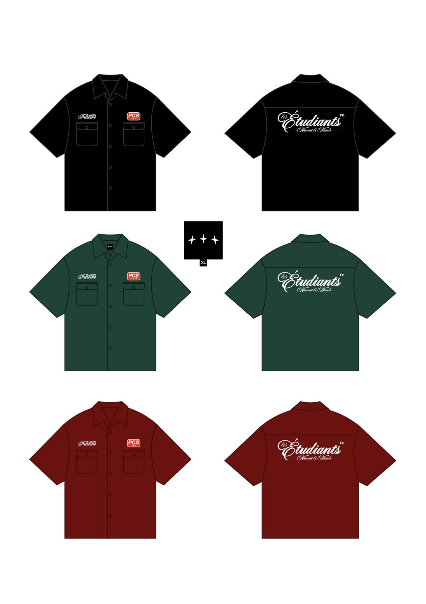
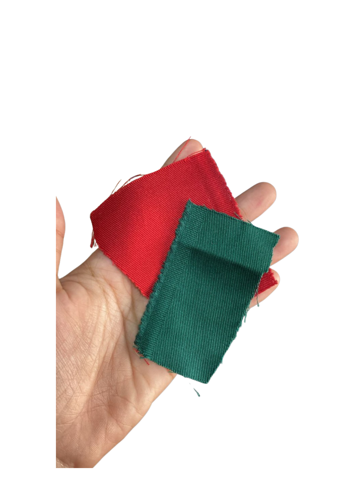
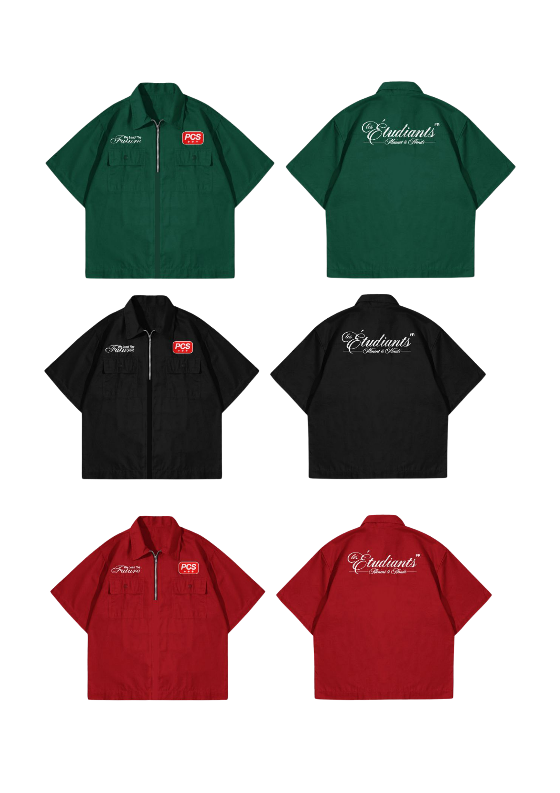
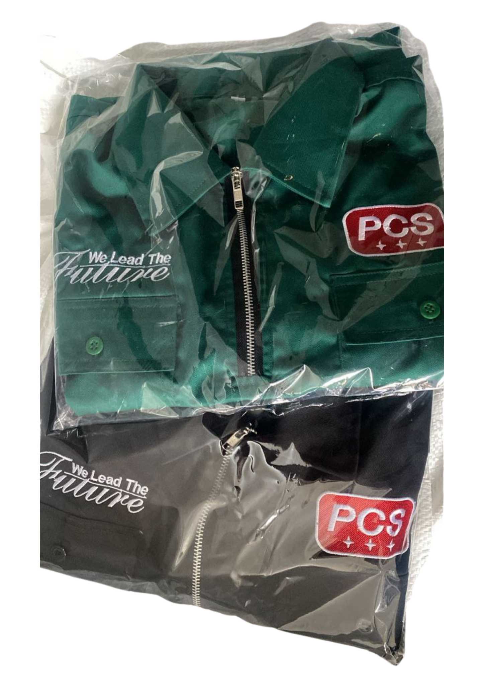

Initial Mockup
Button Workshirt
Everything started with a simple idea — a button workshirt. Clean, functional, and comfy. The goal? Make it something you actually want to wear all day.

Colour Selection
Red, Green & Black
Colours were picked with meaning. Red, green, and black — strength, hope, resilience. Subtle, but the vibe is there.

Material Choice
Japanese Drill
Material matters. Japanese drill was chosen for durability, clean look, and comfort. Perfect for work, casual outings, or everyday wear.

Design Evolution
Button to Half Zipper
The original button design was okay, but PCS needed more character. Half zipper came next — practical, clean, and on-brand.

Sewing & Embroidery
Detail That Defines Identity
This is where magic happens. Precise stitching and embroidery bring PCS's identity to life. The small details make the quality feel real.
Final Product
Sample & Temporary Packaging
The final sample goes into temporary packaging for documentation. Not the customer version yet, but this is where the product starts to feel alive.

Casual Shoot
For Social Media
A casual shoot to showcase the product in real-life settings. Relaxed vibe, but PCS character stays strong. Feeds look lively and authentic.